Universidad Mayor de San Andrés
Facultad de Ciencias Puras y Naturales
Carrera de Informática
TESIS DE GRADO:
“Machine Learning Para Clasificación De Imágenes Por Su Contenido, Caso Elementos Del Alfabeto Español”
indice
- Marco Preliminar
- Marco Teórico
- Marco Aplicativo
- Pruebas y Resultados
- Conclusiones y Recomendaciones
Introducción
- Clasificación
- Alfabeto Español
- Inteligencia Artificial
Antecedentes
- Ámbito Internacional
- Ámbito Nacional
Problema
- Tipos de Imágenes
- Formato
- Interpretación
- Cantidad
Planteamiento del Problema
¿Cómo se puede clasificar solo un grupo imágenes que contengan elementos del lenguaje español de un grupo imágenes en general de manera automática y rápida?Objetivo General
Desarrollar un modelo de aprendizaje automático (Machine Learning) que permita clasificar imágenes por su contenido, en este caso elementos del alfabeto español de una manera rápida y automática.Objetivos Específicos
- Interfaz gráfica de usuario
- Set de datos Confiable (Kaggle)
- Entrenamiento en Anaconda Cloud
- Entrenamiento en Google Colab
- Modelo Almacenado
Limites
- Un solo caracter
- Escritos a Mano Mayusculas
- Alfabeto Español
Alcances
- Base estandar
- PNG y JPG
- Transferencia de Conocimiento
Hipotesis
Utilizando redes neuronales convolucionales para la clasificación de imágenes, se logrará realizar la interpretación de imágenes de letras del alfabeto español, de manera automática y rápida, con una confiabilidad del 90%.2. Marco Teórico
- Enfoque Cualitativo
- Método Inductivo
- Metodologia Ciencia de datos de IBM
- Machine Learning
- Aprendizaje Supervisado
- Redes Neuronales Convolucionales
3. Marco Aplicativo
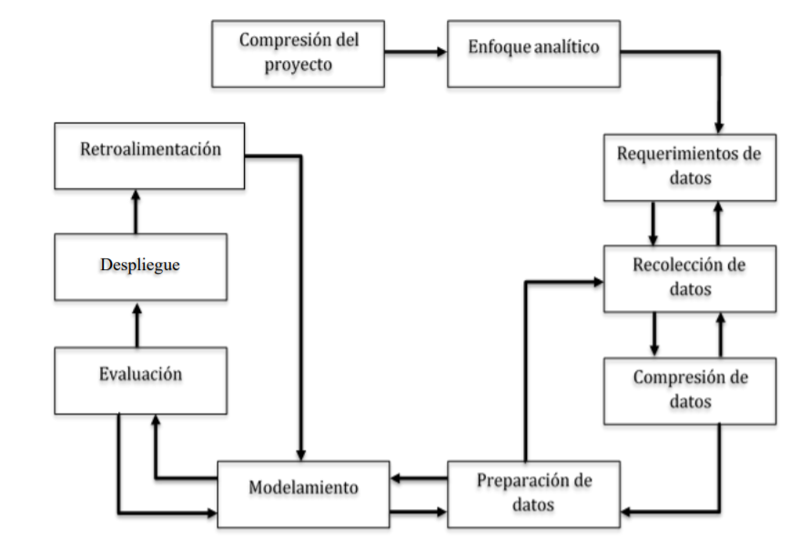3.1. Compresión del Proyecto
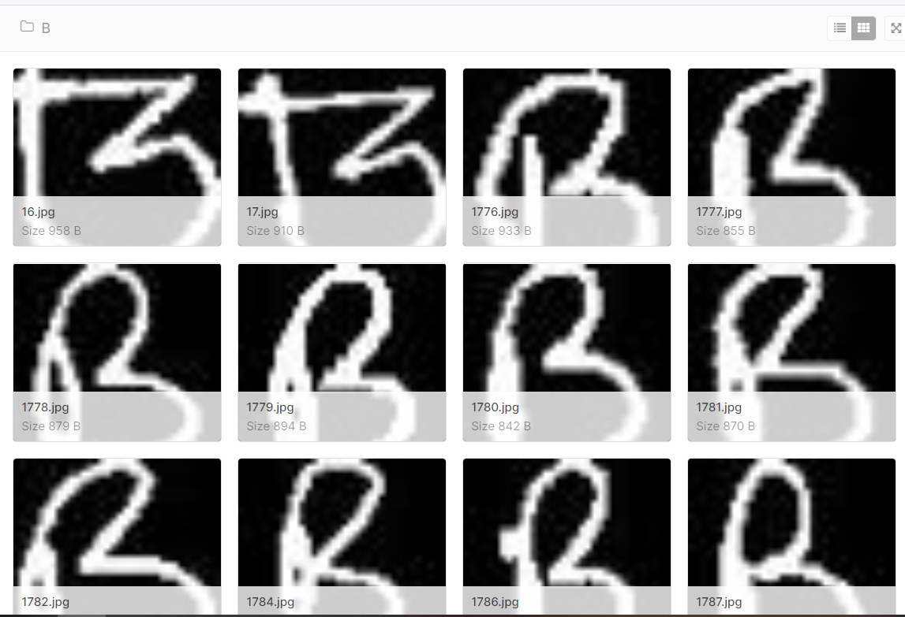3.2. Enfoque Analítico
3.3. Requerimiento de Datos
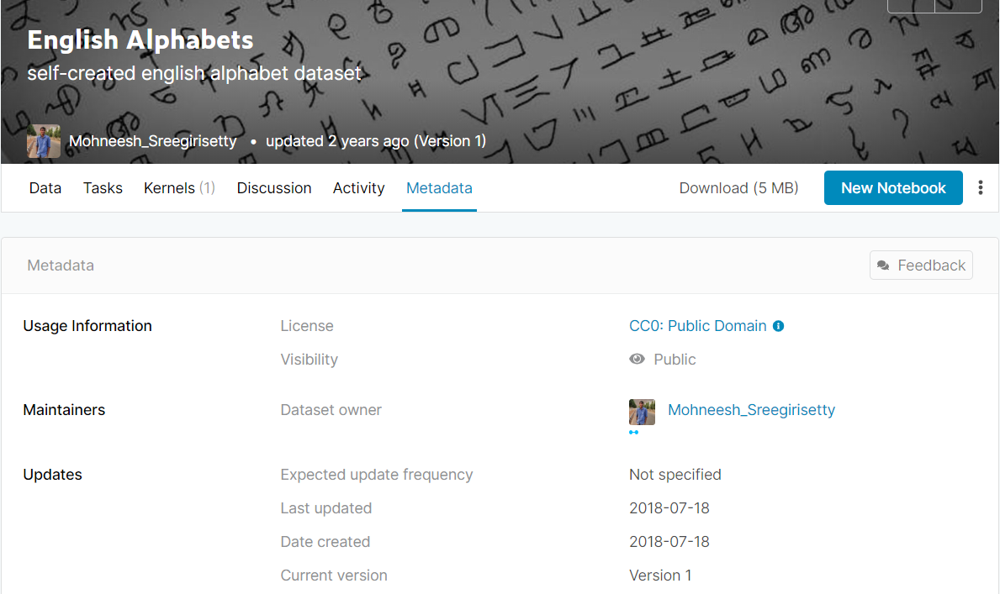3.4. Recolección de Datos
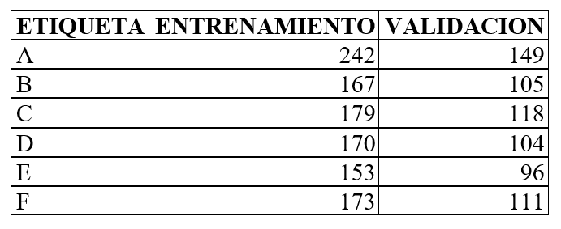3.5. Comprensión de los Datos
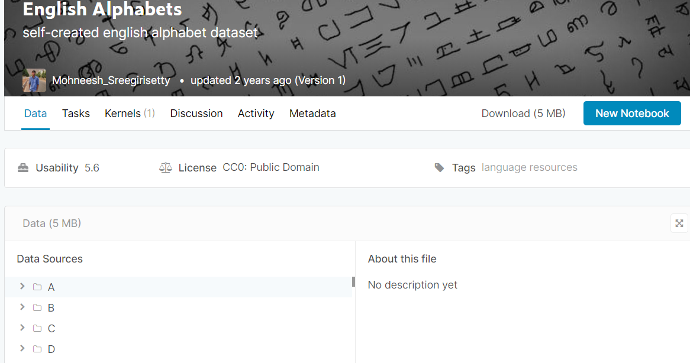3.6. Preparación de los Datos
- Errores en datos y validación de datos vacíos o nulos
- Validación de los tipos de datos
- Validación de los valores
3.7. Modelamiento
- Configuración Anaconda
- Configuración Google Colab
- Definicion Paramétricas
- Definición de Variables

3.8. Evaluación
- Validación: 62.39%
- Entrenamiento: 37.60%
- Accuracy
3.9. Despliegue
- Anaconda Cloud - Entorno de Trabajo
- Anaconda Cloud - Librerias necesarias
- UML - Diagrama de Casos de uso
- UML - Diagrama de secuencia
Anaconda Cloud - Entorno de Trabajo
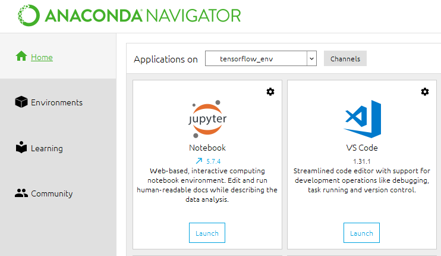Anaconda Cloud - Librerias necesarias
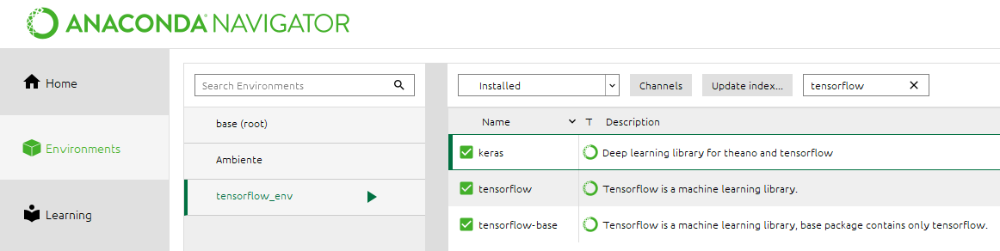UML - Diagrama de Casos de Uso
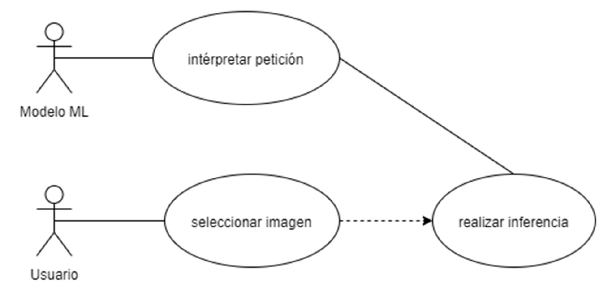UML - Diagrama de Secuencia
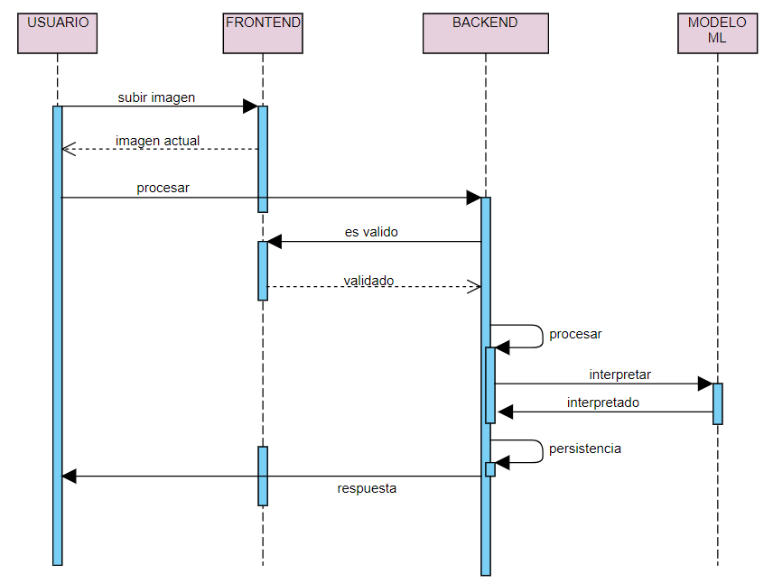3.10. Retroalimentación
- Set de Datos
- Estructura
- Lineamientos
4. Pruebas y Resultados
Hipotesis"Utilizando redes neuronales convolucionales para la clasificación de imágenes, se logrará realizar la interpretación de imágenes de letras del alfabeto español, de manera automática y rápida, con una confiabilidad del 90%."
- Interpretación de imágenes de letras del alfabeto español. Será “X”
- Redes neuronales convolucionales para la clasificación de imágenes, de manera automática y rápida, con una confiabilidad del 90%. Será “Y”
- Algoritmos de Machine Learning.
Características del Entorno Local
- Python versión 3.7.2, Anaconda3 (64 -bit)
- Laptop ASUS Intel Core i7 Séptima Generación, Tarjeta de Video NVIDIA GEFORCE 940MX, 12 GB de RAM
Características Máquina Virtual en la nube Google Colab
- Cuenta Google Colab, tipo de entorno de ejecución Python 3
- GPU
- RAM 12.72 GB
Experimentación en el Entorno Local
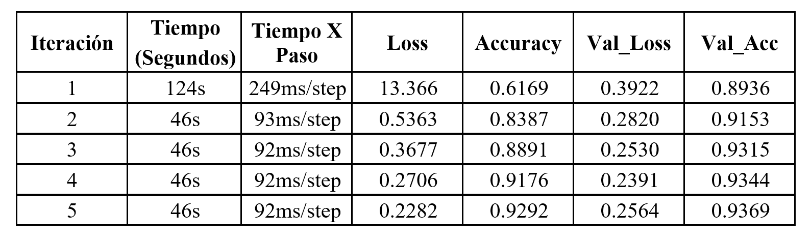Experimentación en el Entorno Local
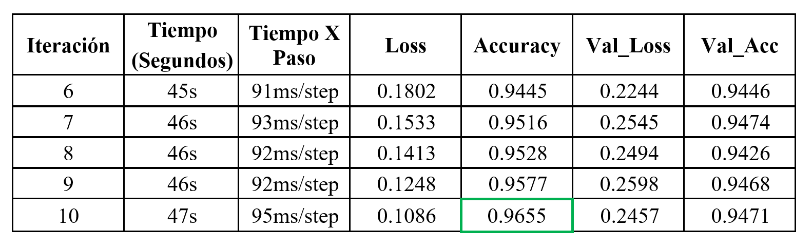Experimentación en el Entorno Local
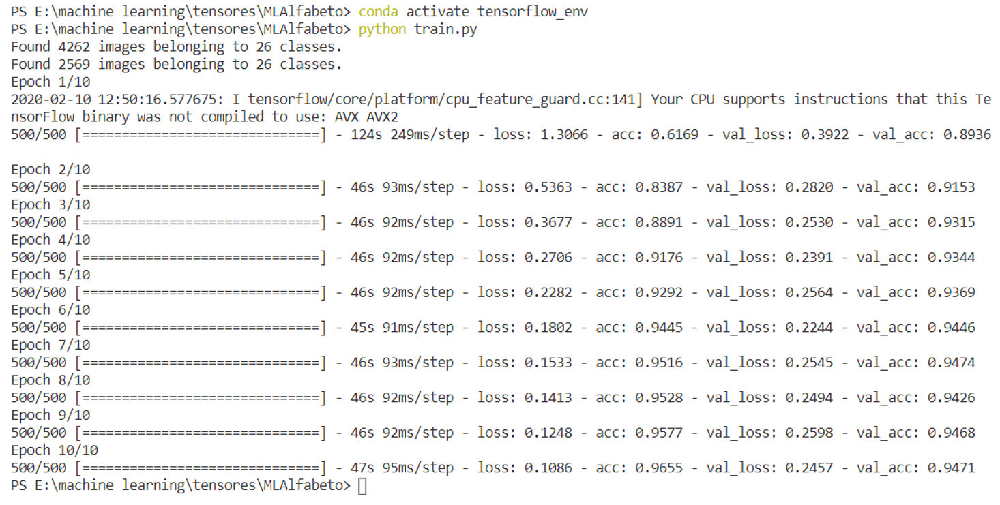Experimentación en la Máquina Virtual
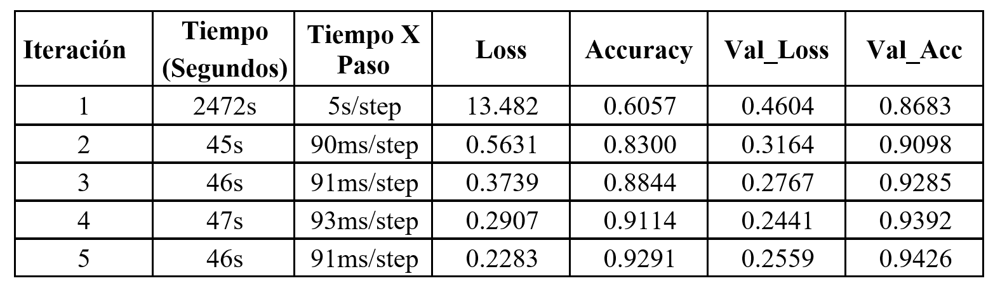Experimentación en la Máquina Virtual
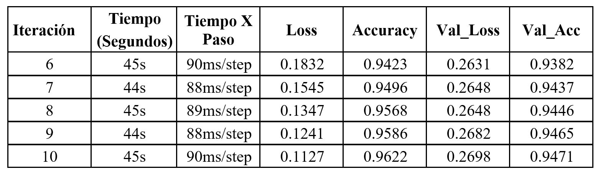Experimentación en la Máquina Virtual
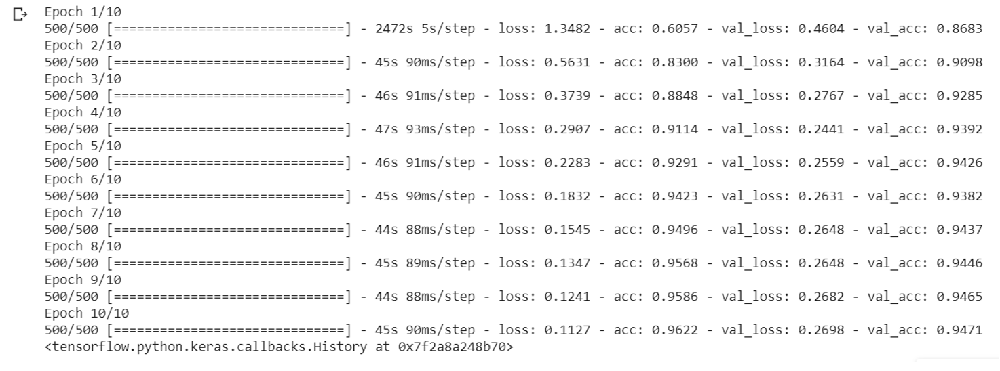5. Conclusiones y Recomendaciones
- Conclusiones
- Recomendaciones